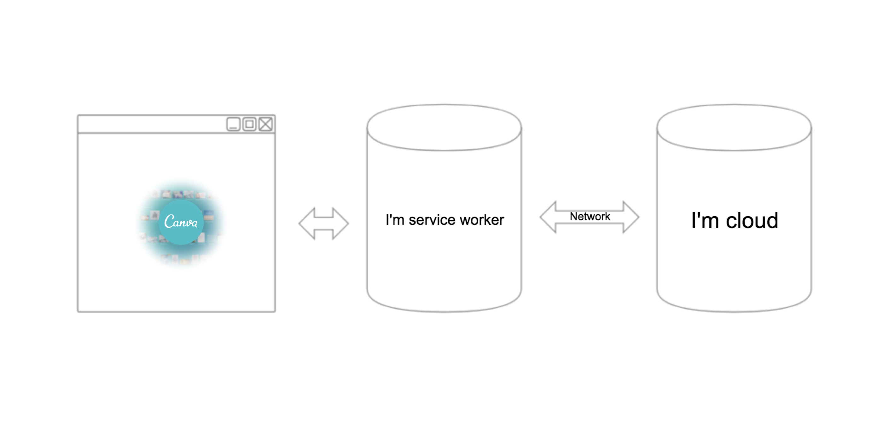

Building Offline Web Applications
Inconsistent Dinosaurs
Why Dinosaur?
DEMO 1
davidguan.me/demo/canva-offlineWithout Service Worker & Good Network

Without Service Worker & Network Down
With Service Worker & Good Network
With Service Worker & Network Down & No Code in Service Worker
With Service Worker & Network Down
The main thread
if ('serviceWorker' in navigator) {
navigator.serviceWorker.register(${service-worker-path})
}
Service worker
self.addEventListener('install', function (event) {
event.waitUntil(
...
)
})
self.addEventListener('fetch', function (event) {
event.respondWith(
...
)
})